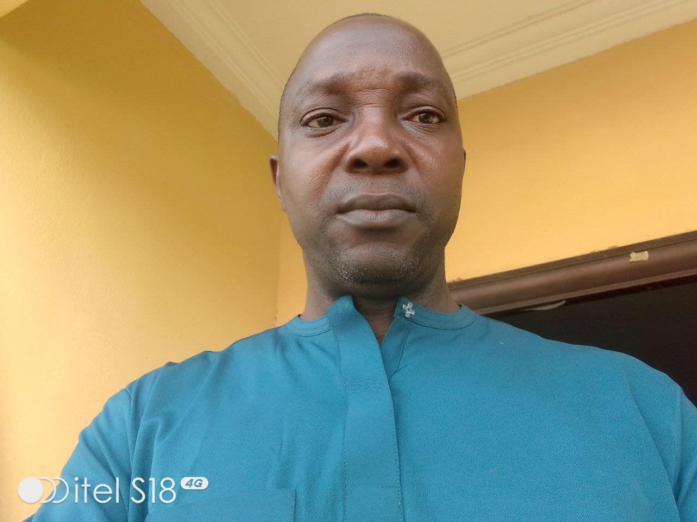

EDWIN ESEKHAIGBE | WDD 130

Dr. Edwin Esekhaigbe is a senior lecturer at the University of Africa in the Department of Mathematics and Computer Science. He obtained his bachelor of science degree (Mathematics) from Edo State University, Ekpoma (now Ambrose Ali University, Ekpoma) in 1998; master of Science Degree (MSc Applied Mathematics-Mathematical Physics) at the Rivers State university of Science and